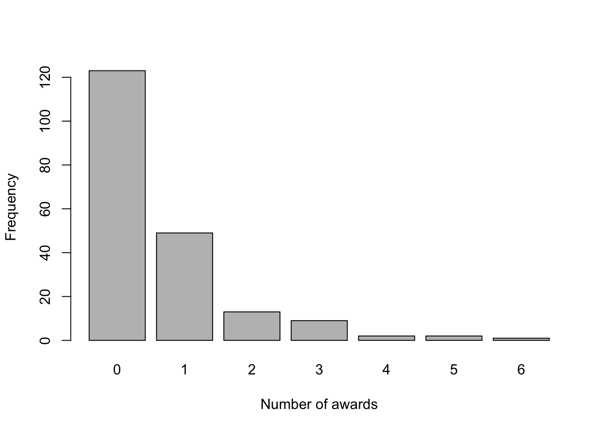
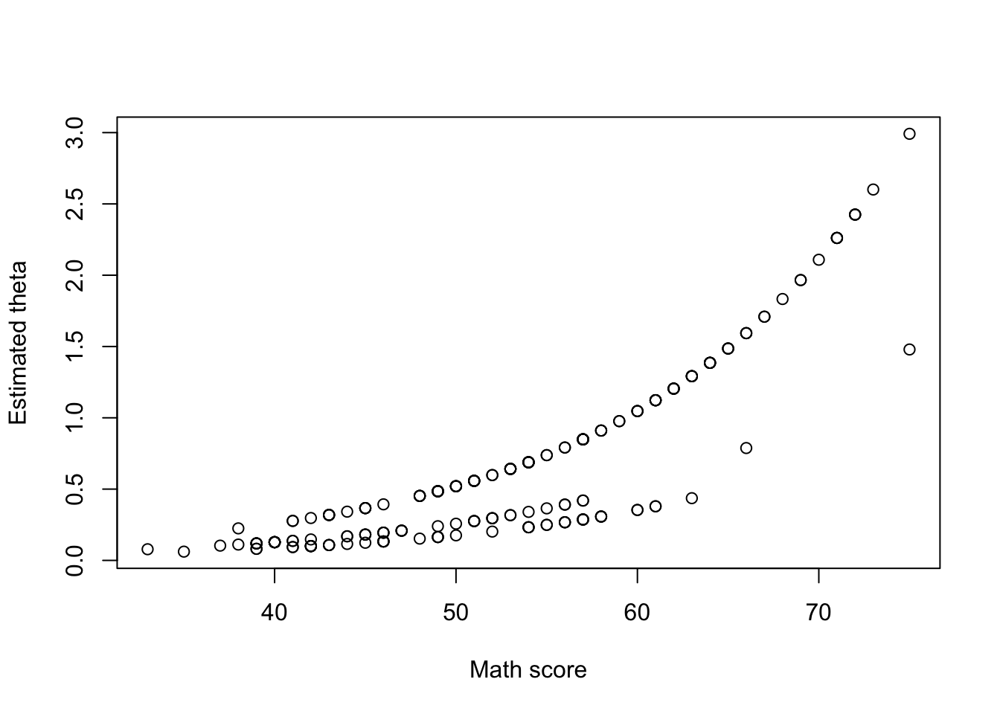
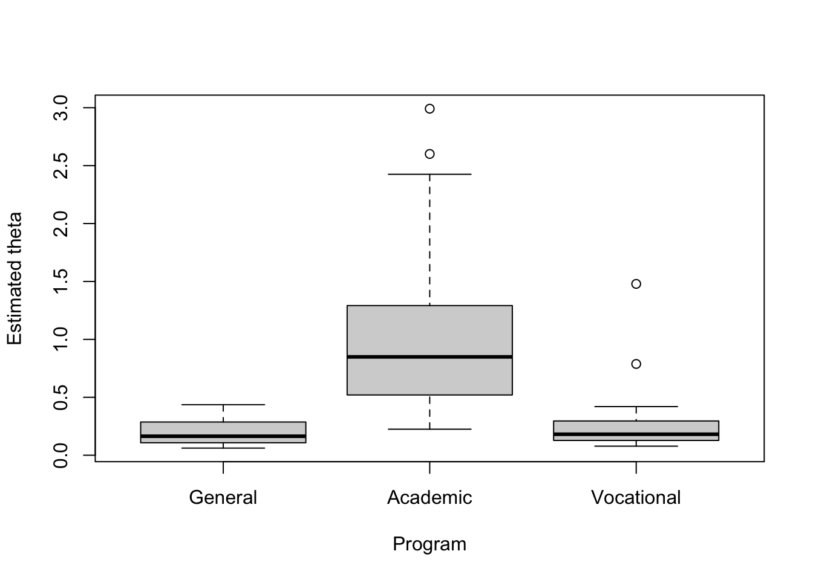
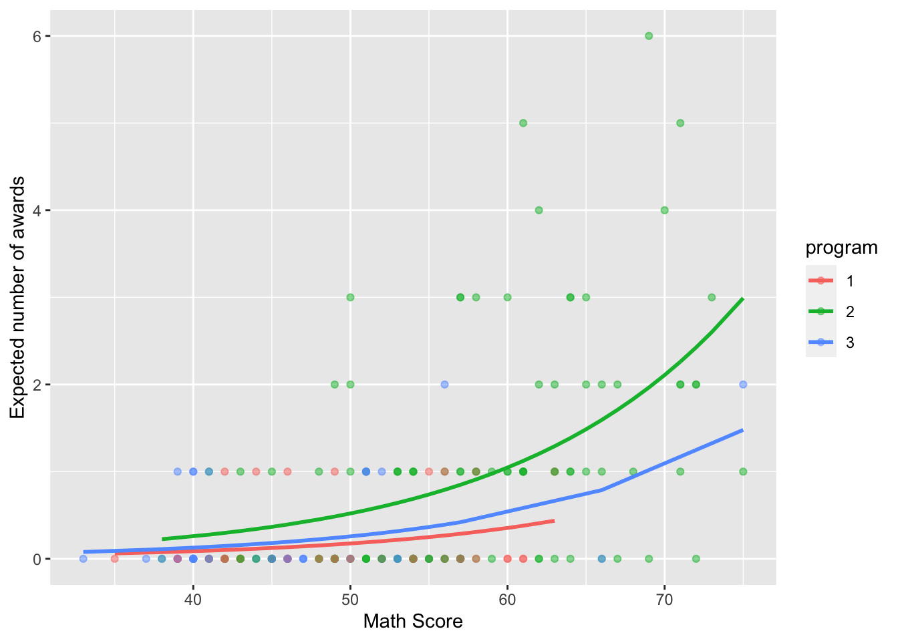

In this case study, we will fit a Poisson regression for count data. We will see the basics on how to explore and plot the data set, fit the corresponding model, and interpret the obtained results.
For this problem, we will analyse data for the number of awards received by high school students depending on their program and Math score. Data were retrieved from UCLA (Advanced Research Computing. Statistical Methods and Data Analytics) website. You can download the .csv file here. The data set contains the following variables:
num_awards (quantitative): Count dataprogram (multi-valued discrete): 1 means “General”, 2 means “Academic”, and 3 means “Vocational”math (quantitative): Math scoreThe Poisson Regression is based on the Poisson distribution for the response variable \(Y\), and has probability mass function (PMF) given by \[ \mathbb{P}(Y = y) = \frac{\theta^{y}}{y!}e^{-\theta}, \text{ such that } y = 0, 1, 2, \cdots \] where \(\theta\) is a parameter that represents the expected rate of occurrences. Also, \(\mathbb{E}(Y) = \text{Var}(Y) = \theta\).
In this case, we assume that \(\theta(\mathbf{x})\) depends on the values of \(\mathbf{x}\) through the linear combination \(\mathbf{x}^{\text{T}}\boldsymbol{\beta}\) for some unknown \(\boldsymbol{\beta}\).
However, \(\theta(\mathbf{x})\) cannot equal \(\mathbf{x}^{\text{T}}\boldsymbol{\beta}\) because \(\theta \in [0, +\infty)\), while the linear combination \(\mathbf{x}^{\text{T}}\boldsymbol{\beta}\) takes values in \(\mathbb{R}\). Thus, we need a transformation to map these two expressions. In our case, we will choose the exp function, that is,
\[ \theta(\mathbf{x}) = \exp\{{\mathbf{x}^{\text{T}}\boldsymbol{\beta}}\}. \] Alternatively, we can write
\[ \log(\theta(\mathbf{x})) = \mathbf{x}^{\text{T}}\boldsymbol{\beta}. \]
In order to explore the data set and perform initial analyses, we have to read it (with R) first. Provided that the .csv file is saved within the datasets/ folder, one can read the file in the following way.
col.names <- c('num_awards', 'program', 'math')
dataset <- read.csv(file = 'datasets/poisson_sim.csv', header = TRUE, sep = ',', col.names = col.names)
dataset$program <- as.factor(dataset$program)
head(dataset, 5)## num_awards program math
## 1 0 1 41
## 2 0 3 44
## 3 0 3 42
## 4 0 3 40
## 5 0 1 42The first thing we can do is checking the distribution for the number of awards
barplot(table(dataset$num_awards), xlab = 'Number of awards', ylab = 'Frequency')
From the above plot, we can see that most students did not receive any award and just a few of them received 3 or more. Also, we would like to check whether \(\mathbb{E}(Y_i|\mathbf{X}_i) = \text{Var}(Y_i|\mathbf{X}_i)\), \(\forall i\). In that case, we can group the individuals according to their program. Firstly,
m <- mean(dataset$num_awards)
v <- var(dataset$num_awards)
print(paste('The overall estimated mean is ', round(m, 3), ' and the overall estimated variance is ', round(v, 3), '.', sep = ''))## [1] "The overall estimated mean is 0.633 and the overall estimated variance is 1.112."However, since we suspect that the variable program is important to our analysis, we may compute the mean and variance of the number of awards after grouping the students. In that case,
est.1 <- round(c(mean(dataset$num_awards[dataset$program == '1']), var(dataset$num_awards[dataset$program == '1'])), 3)
est.2 <- round(c(mean(dataset$num_awards[dataset$program == '2']), var(dataset$num_awards[dataset$program == '2'])), 3)
est.3 <- round(c(mean(dataset$num_awards[dataset$program == '3']), var(dataset$num_awards[dataset$program == '3'])), 3)
est <- rbind(est.1, est.2, est.3)
colnames(est) <- c('Mean', 'Variance')
rownames(est) <- c('General', 'Academic', 'Vocational')
est## Mean Variance
## General 0.200 0.164
## Academic 1.000 1.635
## Vocational 0.245 0.272In that case, if the variable program is used to fit the model, the assumption for the mean and variance seems to hold. Therefore, we can use the Poisson regression model.
As for the logistic regression, the Poisson regression is a special cases of a class of models named Generalized Linear Models (GLM), and to fit such a model, we will use the glm() function from base R. We can see the function help by entering the ?glm command.
Let’s start by fitting a model with all covariates and interaction.
model1 <- glm(formula = num_awards ~ math + program + math * program, data = dataset, family = poisson(link = 'log')) # with log link function
summary(model1)##
## Call:
## glm(formula = num_awards ~ math + program + math * program, family = poisson(link = "log"),
## data = dataset)
##
## Deviance Residuals:
## Min 1Q Median 3Q Max
## -2.2295 -0.8024 -0.5363 0.2673 2.6826
##
## Coefficients:
## Estimate Std. Error z value Pr(>|z|)
## (Intercept) -3.86179 2.49317 -1.549 0.121
## math 0.04400 0.04721 0.932 0.351
## program2 -0.44107 2.60299 -0.169 0.865
## program3 -0.77333 2.87348 -0.269 0.788
## math:program2 0.02841 0.04870 0.583 0.560
## math:program3 0.02176 0.05428 0.401 0.689
##
## (Dispersion parameter for poisson family taken to be 1)
##
## Null deviance: 286.41 on 198 degrees of freedom
## Residual deviance: 188.82 on 193 degrees of freedom
## AIC: 376.87
##
## Number of Fisher Scoring iterations: 6Based on the above summary, for a significance level of 5%, all coefficients seem to be non-significant. Therefore, we might want to fit a simpler model. In particular, we will not include interaction for model2.
model2 <- glm(formula = num_awards ~ math + program, data = dataset, family = poisson(link = 'log'))
summary(model2)##
## Call:
## glm(formula = num_awards ~ math + program, family = poisson(link = "log"),
## data = dataset)
##
## Deviance Residuals:
## Min 1Q Median 3Q Max
## -2.2023 -0.8477 -0.5055 0.2755 2.6794
##
## Coefficients:
## Estimate Std. Error z value Pr(>|z|)
## (Intercept) -5.23755 0.65836 -7.955 1.78e-15 ***
## math 0.06997 0.01060 6.602 4.05e-11 ***
## program2 1.08534 0.35824 3.030 0.00245 **
## program3 0.38099 0.44104 0.864 0.38767
## ---
## Signif. codes: 0 '***' 0.001 '**' 0.01 '*' 0.05 '.' 0.1 ' ' 1
##
## (Dispersion parameter for poisson family taken to be 1)
##
## Null deviance: 286.41 on 198 degrees of freedom
## Residual deviance: 189.18 on 195 degrees of freedom
## AIC: 373.23
##
## Number of Fisher Scoring iterations: 6For model2, we will keep all covariates.
This means that, considering “General” (1) as the base-category, and defining \(\mathbb{I}_{\{\text{program}_i = 2\}}\) and \(\mathbb{I}_{\{\text{program}_i = 3\}}\) indicator functions for the events that “individual i belongs to the Academic program” and “individual i belongs to the Vocational program”, respectively, we have that
\[ \hat\theta_i = \exp\{-5.237 + 0.070 \text{ math_score}_i + 1.085 ~\mathbb{I}_{\{\text{program}_i = 2\}} + 0.390 ~\mathbb{I}_{\{\text{program}_i = 3\}}\} \]
In R, we can compute \(\hat\theta_i\) as follows
eta <- predict(model2)
theta <- exp(eta)
dataset$est_theta <- theta
head(dataset)## num_awards program math est_theta
## 1 0 1 41 0.0936090
## 2 0 3 44 0.1690241
## 3 0 3 42 0.1469503
## 4 0 3 40 0.1277592
## 5 0 1 42 0.1003938
## 6 0 3 46 0.1944138Now, we can explore how \(\hat\theta_i\) relates to both program and math.
plot(dataset$math, dataset$est_theta, xlab = 'Math score', ylab = 'Estimated theta', type = 'p')
boxplot(dataset$est_theta ~ dataset$program, xlab = 'Program', ylab = 'Estimated theta',
names = c('General', 'Academic', 'Vocational'))
Based on the first plot above, it seems that as the math score increases, the expected number of awards also increases. Also, based on the second plot, the “Academic” program seems to correspond to the group with the largest expected number of awards.
Furthermore, recalling that
\[ \hat\theta_i = \exp\{-5.237 + 0.070 \text{ math_score}_i + 1.085 ~\mathbb{I}_{\{\text{program}_i = 2\}} + 0.390 ~\mathbb{I}_{\{\text{program}_i = 3\}}\}, \] we can say that
math is \(0.070\). This represents a \(100 \cdot (e^{0.070} - 1) = 7.2\%\) increase in the rewards rate.Finally, we can also plot the expected number of awards grouped by program.
library(ggplot2)
ggplot(as.data.frame(dataset), aes(x = math, y = est_theta, colour = program)) +
geom_point(aes(y = num_awards), alpha = 0.5) +
geom_line(size = 1) +
labs(x = "Math Score", y = "Expected number of awards")